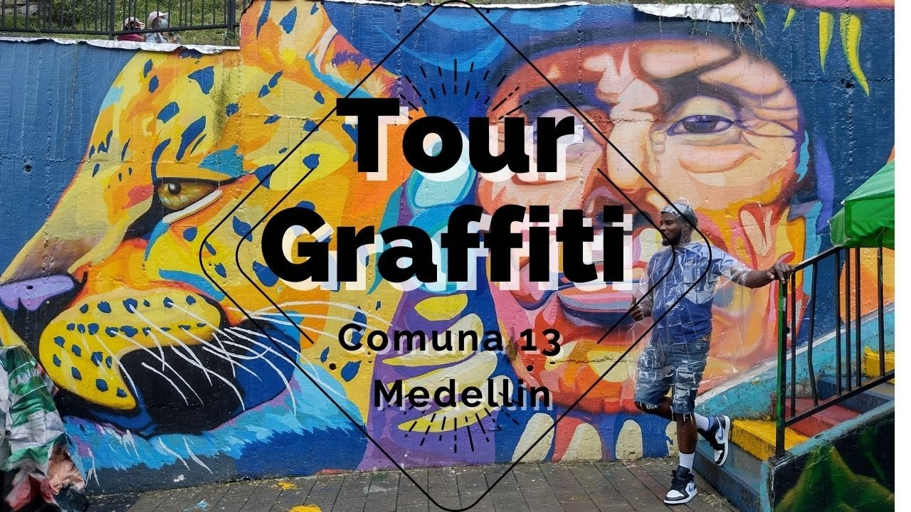
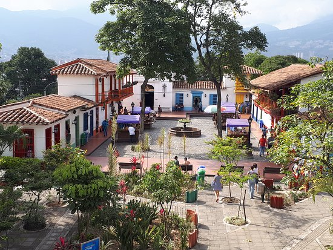

Medellin
Que hacer en medellin?
City Tour

Medellín es una ciudad con gran actividad cultural en el día y en la noche. Cuenta con 22 museos, más de 25 centros comerciales y centros médicos especializados que la hacen ideal para el turismo de salud. La ciudad llama la atención por el desarrollo de obras que la hacen incluyente. El Metro, los Metro Cables, el Metroplus, el Tranvía, las ciclorrutas, las escaleras eléctricas y los centros culturales acogen también a los viajeros que llegan a la ciudad.
Tour Graffiti
La Comuna 13 de la ciudad de Medellín posee gran actividad turística y cultural; nos presenta la transformación social y artística que ha tenido, a través de una renovación urbana por medio del arte, traspasando la barrera de las contingencias históricas y posicionándose como un sitio atractivo, innovador y acertado para conocer más de la cultura paisa. El Graffiti Tour promueve el desarrollo de obras y grafitis que hacen incluyente la construcción y transformación social y cultural de Medellín.
Tour Parque Arvi

El Parque Regional Ecoturístico Arví (Parque Arví), se encuentra a 30 kms del centro de Medellín (Colombia) en el corregimiento de Santa Elena y el municipio de Guarne (Antioquia - Colombia). Es un parque abierto desarrollado en predios de uso público, creado para el disfrute de toda la comunidad local, nacional e internacional, que mediante la construcción de una oferta turística organizada, permite consolidar una estrategia de conservación y promoción de las potencialidades y fortalezas del corregimiento, exaltando su riqueza cultural y ambiental así como el patrimonio arqueológico, la tradición silletera y el emprendimiento de su gente, a través de una propuesta de turismo de naturaleza sostenible.
Tour Pueblito Paisa
El Pueblito Paisa de Medellín es uno de los sitios turísticos más visitados de la ciudad que combina tres elementos que
todos amamos: la tradición antioqueña que se refleja en las artesanías, gastronomía y arquitectura del lugar; la vista
majestuosa de Medellín y las montañas que recorren el Valle de Aburrá.
Es uno de los cerros tutelares de Medellín y está ubicado en lo más alto del Cerro Nutibara; con una extensión de 33
hectáreas y una altura de 80 metros sobre el nivel de la ciudad.